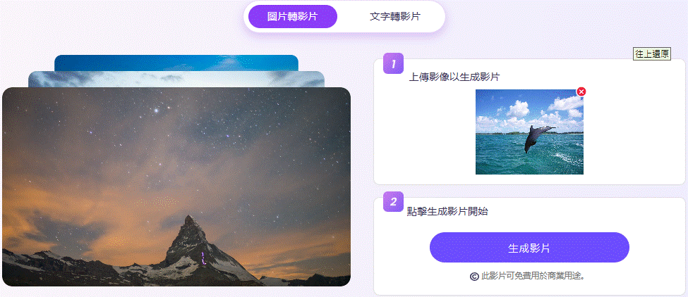

AI 影像轉影片
透過 AI 技術讓靜態圖片變成動態影片。
主要功能
- 簡單快速的轉換： 透過上傳圖片或輸入文字，幾分鐘內即可生成影片，無需專業技能。
- 豐富的風格選擇： 提供超過 30 種不同風格，如卡通、動畫和黏土動畫等，滿足各種美學需求。
- 高品質影片輸出： 使用先進的渲染技術，確保影片清晰度高、色彩鮮豔且動作流暢。
- 多平台分享： 可調整影片尺寸以適應不同平台，並直接分享到社交媒體，如 TikTok 和 YouTube 等。
使用步驟
步驟 2：生成影片
AI 會自動處理動畫效果，將靜態圖片轉為流暢的影片，最終輸出為 MP4 格式。
步驟 3：下載與分享
生成後的影片可供下載，或直接分享到社群平台、簡報、行銷內容等。

完成
Vidnoz AI 的影像轉影片功能適用於 數位行銷、教育內容、社交媒體創作、娛樂 等，讓靜態影像變得更具吸引力！

成品
Vidnoz AI 可應用於虛擬主播、教育、行銷、娛樂等場景。
注意事項
- 免費版 vs. 付費版： 免費版本可能有限制，如影片時長或解析度，請確認是否符合需求。
- 個人資訊保護： 避免上傳個人照片或敏感資訊，確保數據安全。
- 版權問題： 使用合法授權圖片，避免侵權風險。
- 字幕與語音同步： 生成影片時，請確認字幕與畫面內容同步。
- 影片下載與分享： 上傳至社交平台前，請確認該平台對 AI 生成內容的規範。
返回首頁